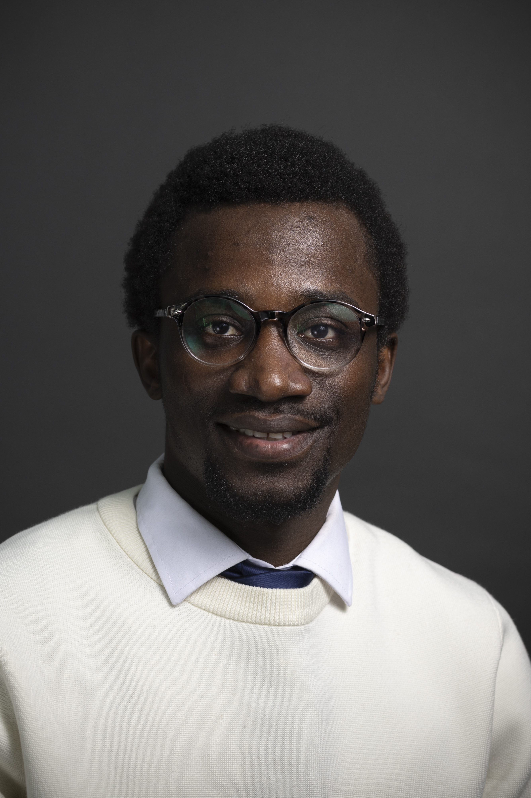

Doctorant · Chercheur · Ingénieur
Doctorant en modélisation hydrométéorologique à l'UQAM — mes recherches s'intéressent à l'impact des précipitations extrêmes et de la fonte nivale sur les crues maximales probables en climat non stationnaire.
"Comprendre l'eau pour protéger les infrastructures de demain."

Montréal, Canada · 2026
Profil
Ingénieur en génie rural de formation, titulaire d'un Master en hydrologie-hydrogéologie de l'Université Paris-Saclay (Mention Bien), je poursuis actuellement un doctorat à l'UQAM sur les Crues Maximales Probables en lien avec les infrastructures hydroélectriques du Québec.
Mon parcours international — Burkina Faso, Maroc, France, Canada — forge une vision plurielle des enjeux hydriques, mêlant rigueur analytique, expertise terrain et maîtrise des outils de modélisation numériques les plus avancés.
Cofondateur de Water and Mining Engineering (WME), une entreprise innovante spécialisée en gestion durable des ressources en eau, je mets en pratique ma passion pour l'entrepreneuriat au service de défis hydrologiques concrets.
Passionné également par les arts martiaux (Vovinam Viet Vo Dao), je cultive un équilibre entre discipline intellectuelle et engagement physique.
Parcours professionnel
Parcours académique
Outils & Savoir-faire
Réalisations
Réalisation des études géologiques, hydrologiques et hydrauliques pour la construction d'un barrage au Maroc. Dimensionnement des ouvrages annexes.
Modélisation et délimitation des zones inondables à l'aide du logiciel HEC-RAS en 1D et 2D. Cartographie des risques hydrauliques.
Calcul des débits de projet pour la construction d'un barrage via des méthodes statistiques et empiriques. Caractérisation du bassin versant et modélisation hydrologique.
Entrer en contact
Disponible pour des collaborations académiques, des projets de recherche ou des opportunités en hydrologie et modélisation hydraulique.